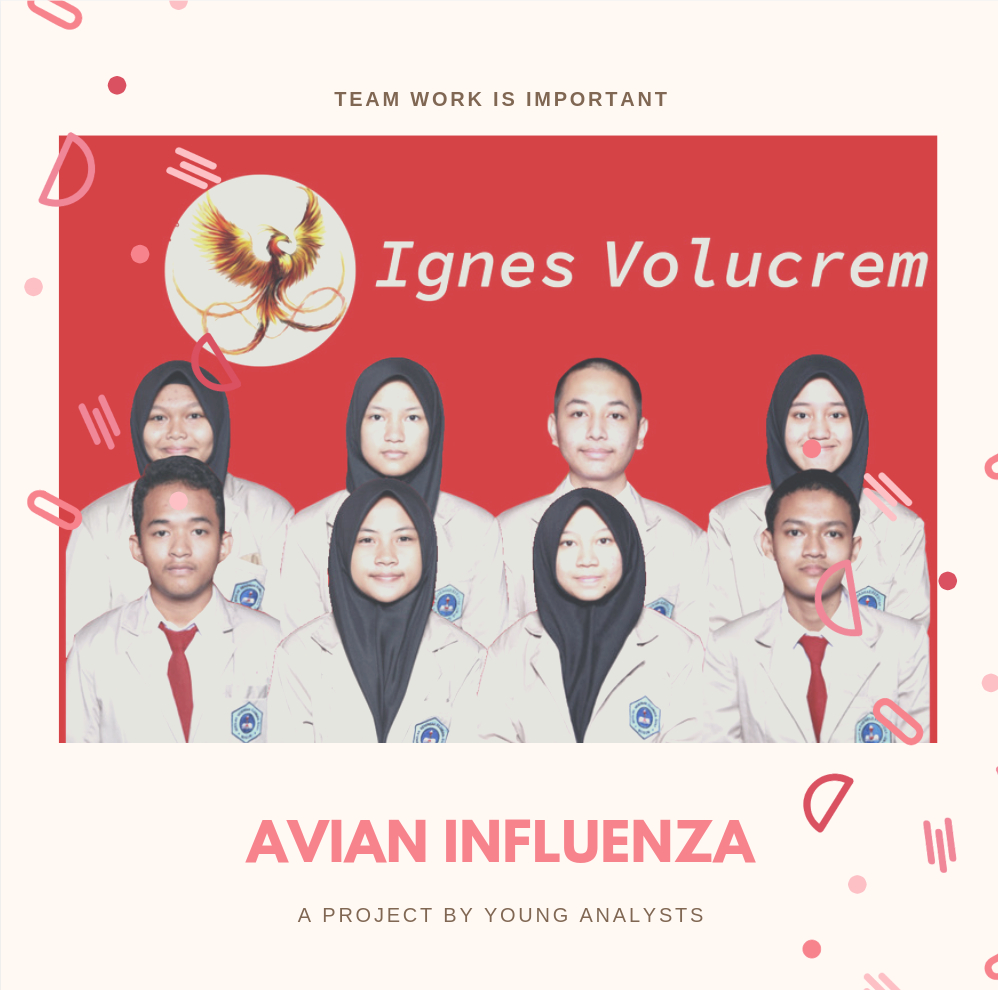
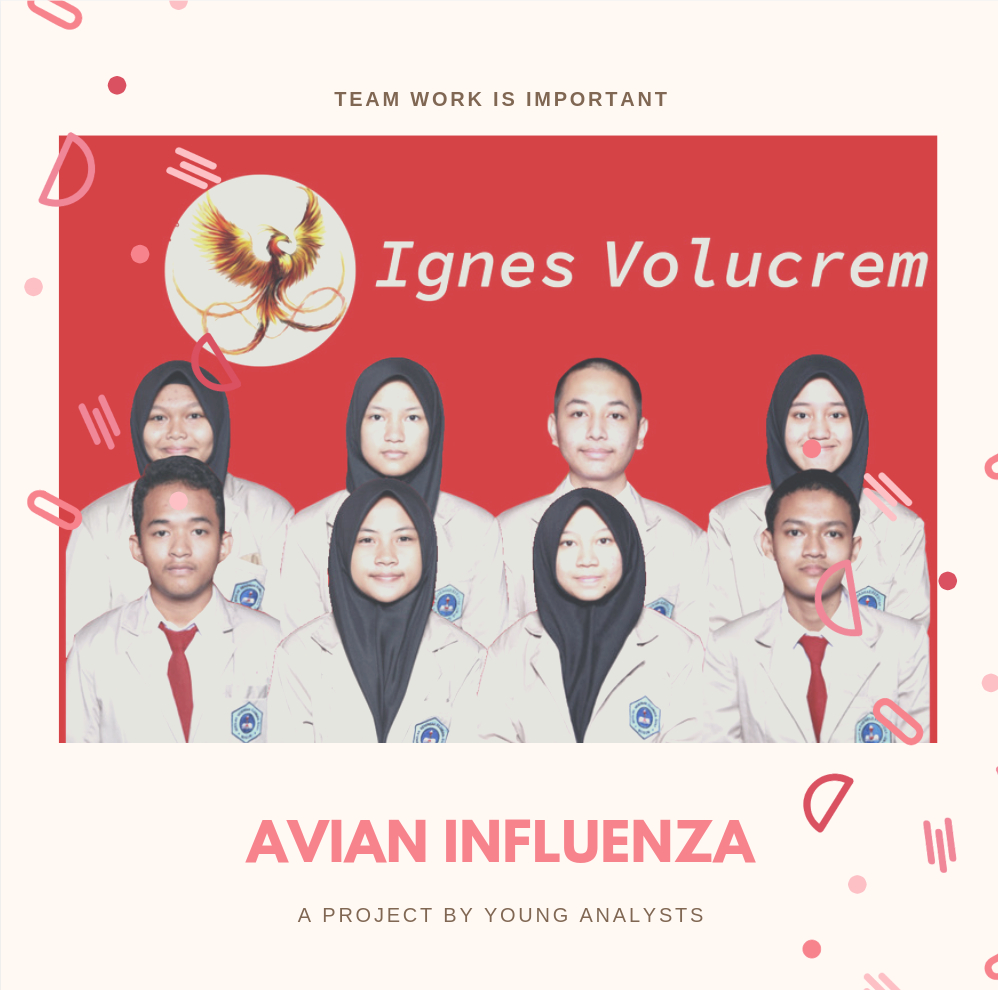

Kesadaran Masyarakat Terhadap Flu Burung
This blog is dedicated for people knowledge about how to avoid Avian Influenza

Kesadaran Masyarakat
May 1, 2020
Flu burung tergolong ke dalam penyakit yang mudah menyebar dan mematikan. Meski demikian, penyakit yang disebabkan oleh virus ini bisa dicegah penyebarannya. Salah satu caranya adalah dengan kesadaran masyarakat dalam:
1.Kebersihan
Faktor utama dalam mencegah infeksi dan penyebaran flu burung ini adalah menjaga kebersihan. Terutama apabila masyarakat memelihara unggas seperti ayam dan burung. Seperti yang dikutip dari Menteri Kesehatan RI, bahwa "Masyarakat yang memelihara unggas harus membersihkan kandang secara rutin, membersihkan daerah sekitar kandang dan selokan, dan membersihkan diri setelah melakukan kontak dengan unggas," "
2.Tidak menganggap remeh flu burung
Faktor penentu lainnya adalah kesadaran mengenai gejala yang menunjukkan potensi gejala flu burung. Seringkali influenza dianggap remeh, sehingga flu burung terdeteksi setelah menyebar dan sulit diatasi. Hal ini dikarenakan gejala influenza dan flu burung hampir sama. Yang membedakan ialah influenza ringan umumnya memiliki masa inkubasi selama empat hari dan akan sembuh dengan pengobatan dan istirahat. Sebaliknya, flu burung memiliki masa inkubasi selama sepuluh hari dan gejalanya akan memburuk.Tak hanya itu, saat mendapati unggas peliharaan mati sebaiknya melaporkannya agar dapat diteliti apakah ada kaitannya dengan virus flu burung ataupun tidak karena terdapat 2 jenis dari flu burung ini yang keduanya memiliki perbedaan
3. Hindari Beli Unggas Dari Luar Negeri
Mengapa?, karena kita tidak mengetahui apakah unggas tersebut membawa virus dari negara asalnya ataupun tidak, dan sangat beresiko apabila virus yang terbawa adalah virus yang memiliki tingkat virulensi yang tinggi dan dapat membahayakan manusia
4. Menjaga Kesehatan Saat Musim Pancaroba
Perubahan cuaca yang tidak menentu seperti kekeringan dan banjir seringkali membuat seseorang mudah terkena penyakit.Hal ini tak hanya berdampak pada kesehatan, melainkan juga kepada faktor ekonomi keluarga. Saat anggota keluarga sakit, akibatnya tidak bisa bekerja.
Itulah kesadaran yang harus terdapat dalam masyarakat dalam masalah virus flu burung ini. Terima kasih telah membaca artikel ini.
Writer:

Muhammad Fiqhan Al Ghifari
My Social Media
mfiqhan_alghifari
Special Thanks
As Main Source

Thank you to my team that always support me and make this project finished together as a team
As Main Source
